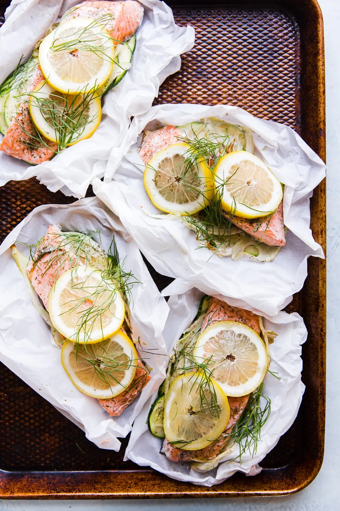

Salmon en Papillote

Description
A quick dinner, Fit for the queen. Baking fish en papillote lets you show off a little for your friends and family, without braking a sweat.
Presented at the table, the puffy packets release a powerful plume of fragrant steam when punctured by you, or by your dinner guests - hinting at the perfectly-tender, herby fish and vegetables inside.
Cooking salmon in parchment paper - in this case, alongside all of our favorite summer flavors - is an easy skill to get the hang of, we promise. Let us walk you through it!
Ingredients and Tools You'll Need:
Tools:
- Baking Sheets
- Parchment Paper or Aluminum Foil
- Sharp Knife
- Cutting Board
Ingredients:
- 1.5 lbs Salmon, cut into 4 pieces
- 1 Small Zucchini, Thinly sliced
- 1 Head fennel, Thinly sliced
- 1 Lemon, thinly sliced
- 1 tsp Dried dill
- 4 tsp Extra virgin olive oil
- 1 tsp Salt
- 1/2 tsp Pepper
- Parchment paper
Steps
- Preheat oven to 375F
- Cut parchment into 4 large ovals 15" by 10" inches. And fold in half
- On half of each parchemnet layer on 1/4 of the zucchini, 1/4 the fennel, 1 piece of salmon, sprikle with 1/4 tsp salt, 1/4 pepper, 1/4 tsp dill, lemon slices, drizzle each salmon with 1 teaspoon olive oil and a few peices of fennel fronds.
Repeat with the three remaining salmon fillets.
- Close the parchemnt by folding the other half over the prepared salmon and carefully roll the open edges toward the center.
- Set pouches on a baking sheet and bake on the center rack for 15 minutes.
- Open carefully using a fork and serve.